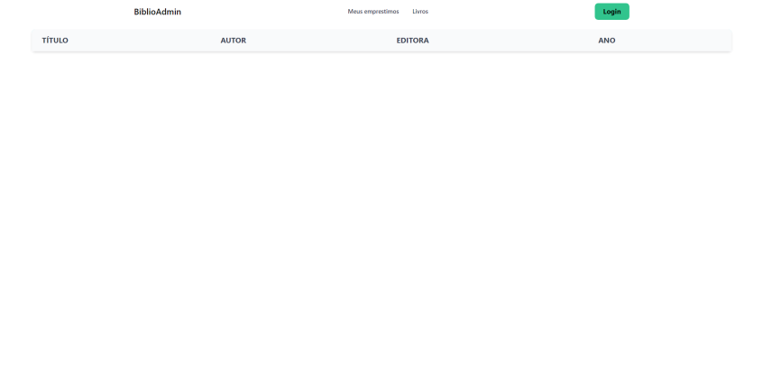

O objetivo é finalizar a API Back-End para o projeto Biblioteca, incluindo operações CRUD, autenticação de usuários, e integração com o Front-End. Além disso, deve-se criar interfaces para login e gestão de empréstimos de livros, seguindo os padrões e restrições estabelecidos.
Habilidades Desenvolvidas: H3, H4, H5, H6, H9 e H10